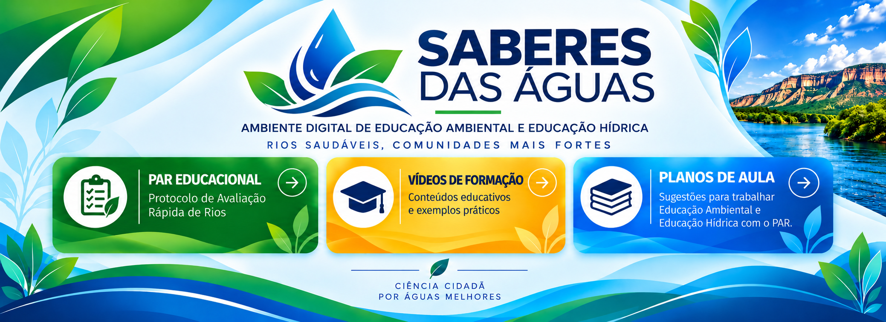
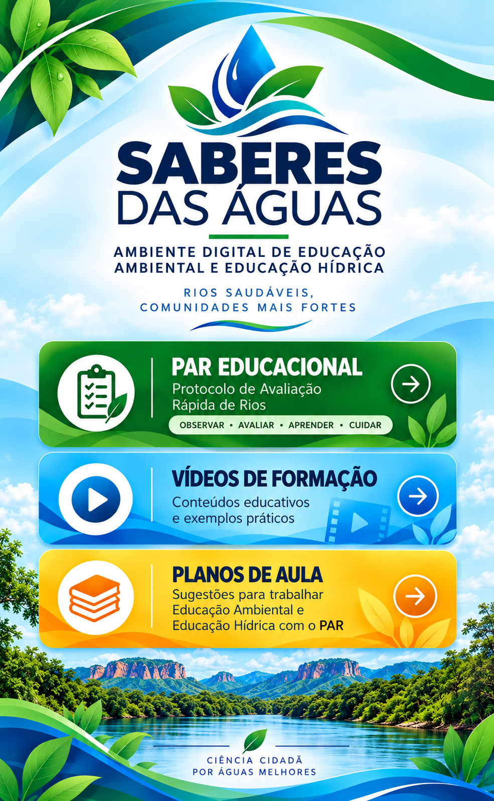
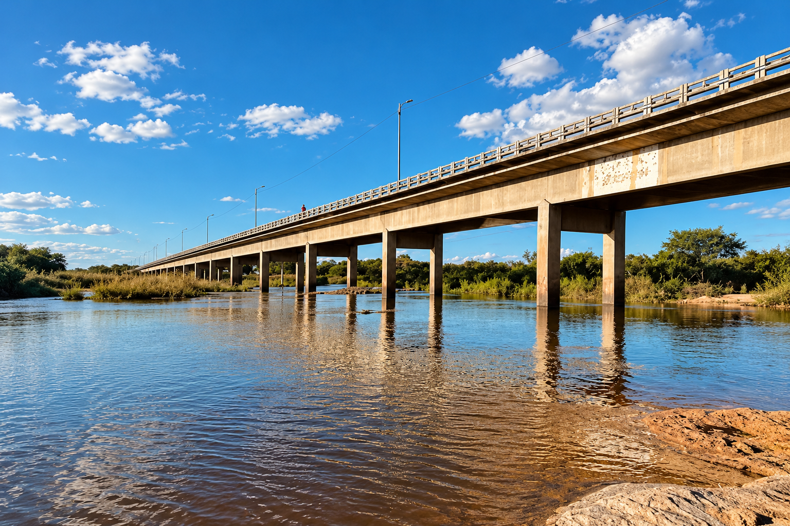
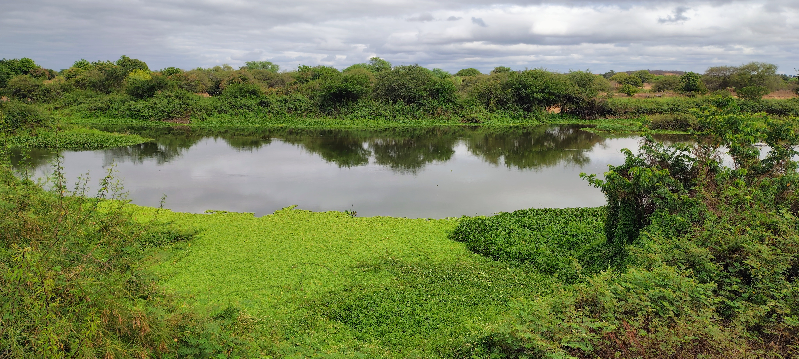
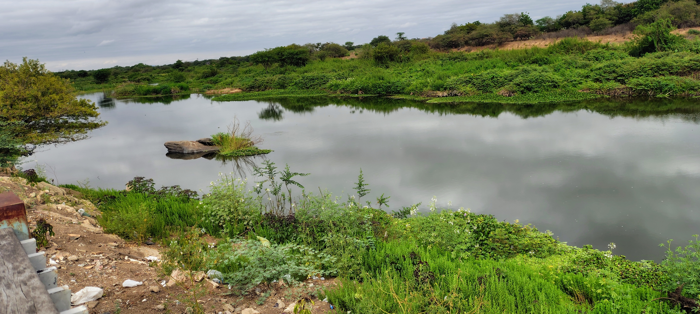
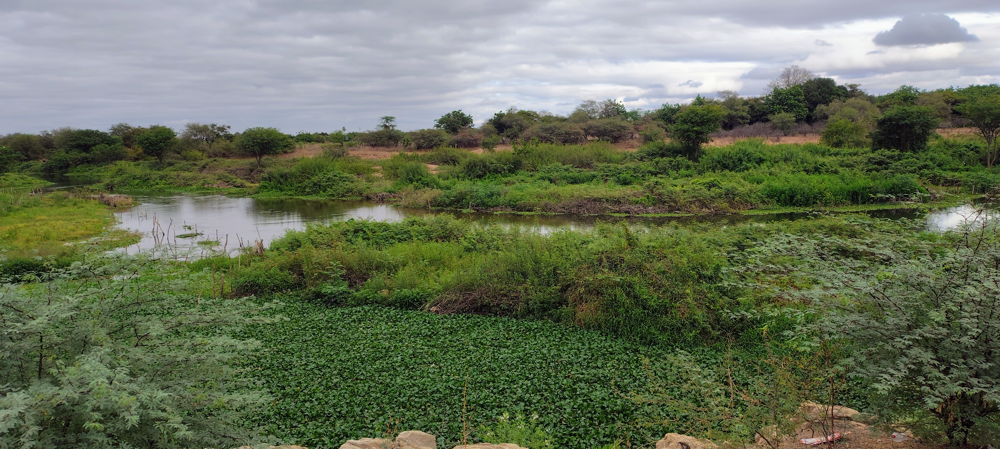
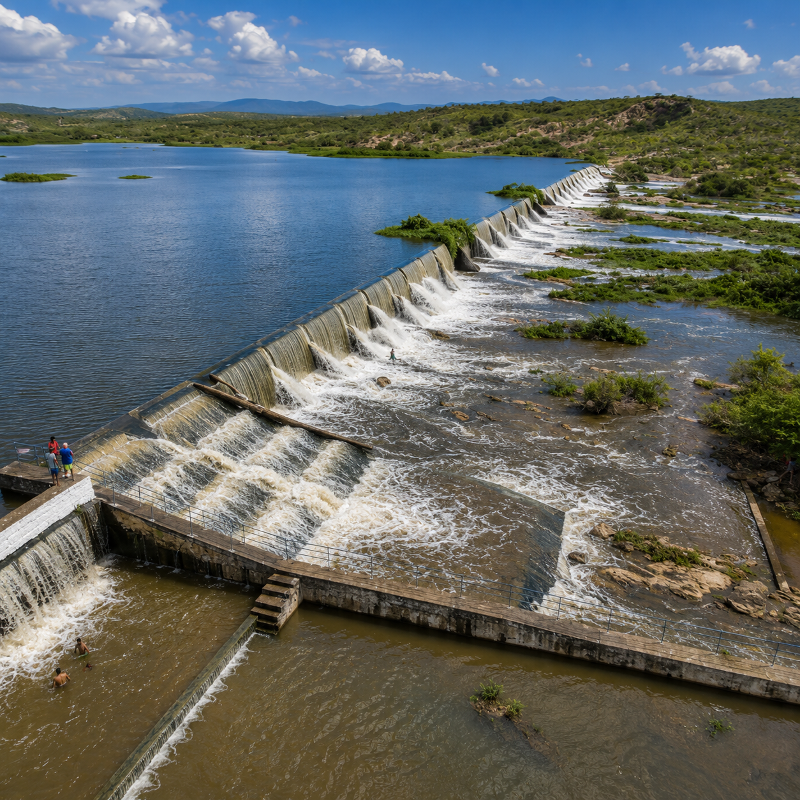
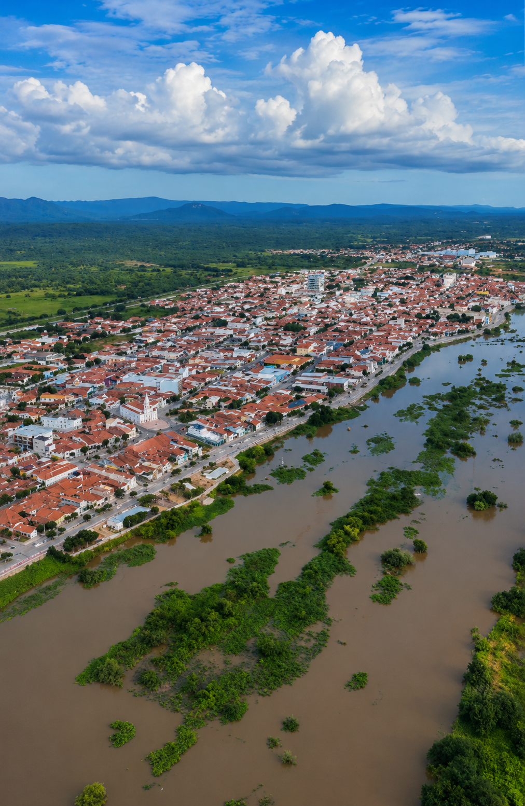
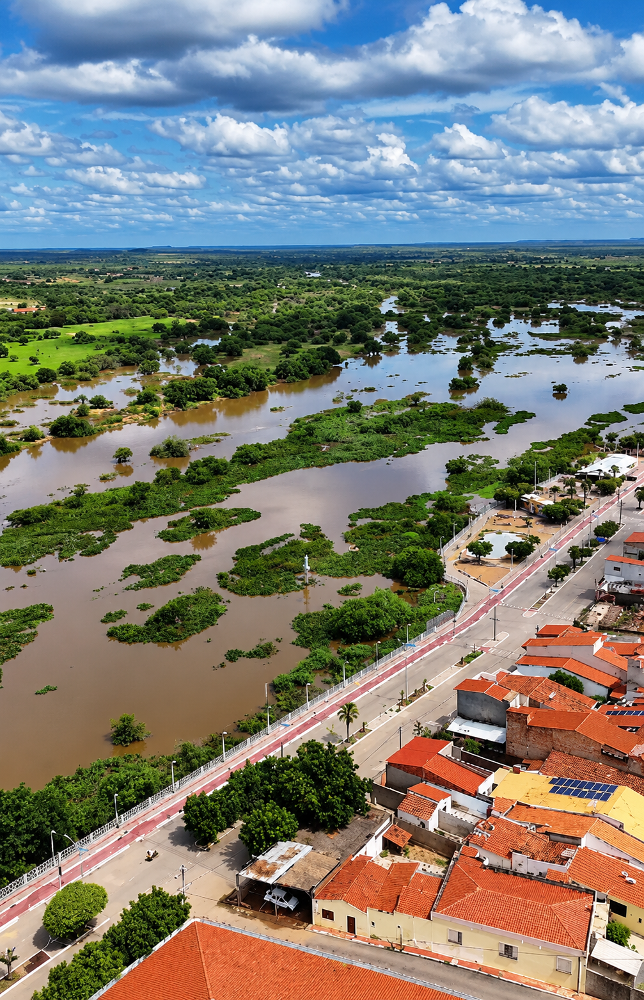
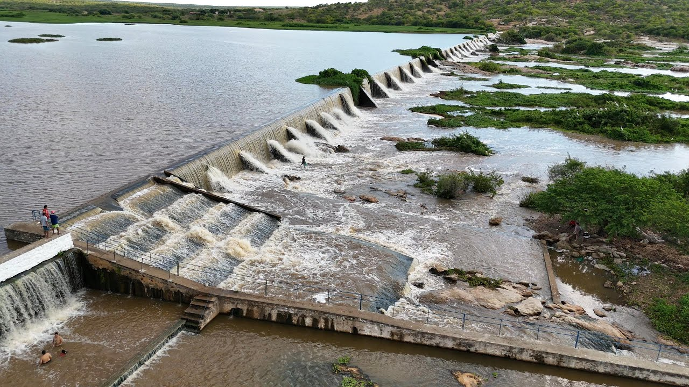

Objetivo da trilha: Oferecer conhecimentos para realizar uma leitura socioambiental do território.
Acesse sugestões de planos de aula interdisciplinares alinhados à BNCC, utilizando o PAR como recurso metodológico investigativo.
Selecione o ponto no mapa para prosseguir.
Nome original
Selecione uma opção.
| TOTAL | 0 |
|---|
O Saberes das Águas é um ambiente digital de Educação Ambiental e Educação Hídrica, desenvolvido como produto educacional para apoiar a formação continuada de docentes da Educação Básica e a contextualização de práticas educativas a partir do território do Rio Jaguaribe, em Jaguaribe, Ceará.
O ambiente integra o PAR Educacional, uma versão sistematizada do Protocolo de Avaliação Rápida (PAR) adaptada à abordagem pedagógica e ao contexto de um rio perenizado no semiárido, a recursos formativos, vídeos, atividades, materiais contextualizadores e propostas de práticas educativas.
O PAR Educacional possibilita a observação e a leitura socioambiental do ambiente aquático por meio de parâmetros relacionados às margens, ao corpo d’água e ao entorno, favorecendo a problematização de questões relacionadas à água, aos recursos hídricos, ao território e às relações entre sociedade e ambiente.
Disponibilizar um ambiente digital que integre o PAR Educacional, conteúdos formativos, recursos multimídia, atividades e propostas pedagógicas, contribuindo para a formação continuada de docentes e para a elaboração de práticas de Educação Ambiental e Educação Hídrica contextualizadas no território do Rio Jaguaribe.
Nota Importante: O PAR Educacional constitui um recurso pedagógico de observação, registro, interpretação e discussão socioambiental, não substituindo análises laboratoriais, monitoramento especializado ou instrumentos institucionais de avaliação e gestão dos recursos hídricos.
O Rio Jaguaribe integra paisagens, comunidades, atividades humanas e diferentes formas de relação com a água. Em Jaguaribe, compreender esse território significa observar como o rio se relaciona com a cidade, a vegetação, as margens e as intervenções humanas.

Ponte de concreto sobre o Rio Jaguaribe — Trecho urbano, Jaguaribe (CE).O território do Rio Jaguaribe reúne diferentes paisagens e formas de ocupação. Ao longo do trecho observado em Jaguaribe, a presença da água se relaciona com a vegetação, as margens, as estruturas construídas e a ocupação urbana.
Essas características permitem compreender o rio para além de sua dimensão física, reconhecendo-o como parte da dinâmica social, ambiental e territorial do município.

Registros visuais de elementos estruturantes da paisagem local

A vegetação marginal contribui para a composição da paisagem e pode ser observada como elemento de leitura do ambiente.

A presença de vegetação aquática constitui um dos elementos que podem ser observados durante a leitura socioambiental do ambiente aquático.

Estruturas construídas podem modificar a paisagem e a dinâmica do ambiente aquático.

A proximidade entre o rio e a ocupação urbana evidencia a relação entre o ambiente natural e a organização do território.

A presença do Rio Jaguaribe influencia e é influenciada pelas formas de ocupação do território. A cidade, as vias de circulação, as áreas construídas, a vegetação e o próprio rio compõem uma paisagem na qual natureza e sociedade estão continuamente relacionadas.
Pontes, estruturas hidráulicas, ocupação das margens e outras intervenções fazem parte da paisagem do Rio Jaguaribe. Observar essas transformações possibilita discutir como as ações humanas podem modificar as características do ambiente e as relações estabelecidas com a água.

O território pode constituir um espaço privilegiado para a construção de conhecimentos sobre água, ambiente e sociedade. A observação de situações presentes no cotidiano permite aproximar os conteúdos escolares das características do espaço vivido.
No Saberes das Águas, o Rio Jaguaribe é utilizado como referência territorial para contextualizar práticas de Educação Ambiental e Educação Hídrica, articulando observação, reflexão, problematização e aprendizagem.
Registro videográfico associado à paisagem local
Imagens do território utilizadas como recurso de contextualização e observação socioambiental.
A leitura do território constitui uma etapa importante para a contextualização das práticas educativas. A partir das características observadas no ambiente, o PAR Educacional oferece parâmetros que podem orientar a observação, o registro, a interpretação e a discussão de aspectos relacionados às margens, ao corpo d'água e ao entorno.
O protocolo avalia 17 parâmetros. O somatório máximo é de 85 pontos:
| Pontuação | Classificação | Interpretação Ambiental |
|---|---|---|
| 64 a 85 | Natural / baixa alteração | Predomínio de características naturais, com pouca evidência de intervenção relevante. |
| 39 a 63 | Alterações reduzidas | Alterações presentes, sem comprometimento generalizado da estrutura do trecho. |
| 26 a 38 | Alterações moderadas | Intervenções e/ou alterações ambientais evidentes em parte relevante do trecho. |
| 0 a 25 | Alterações extremas | Predomínio de alterações intensas e/ou múltiplas pressões antrópicas com forte influência. |